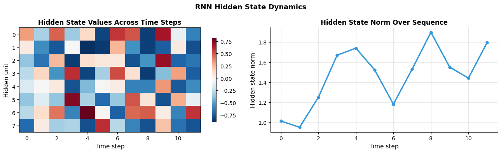
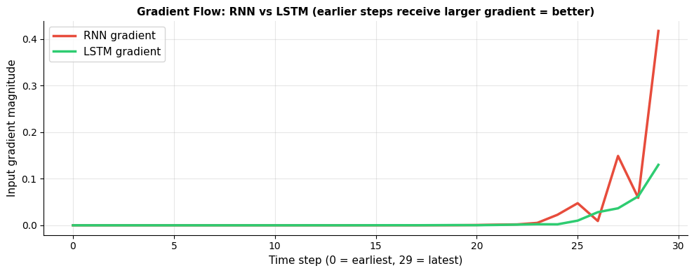
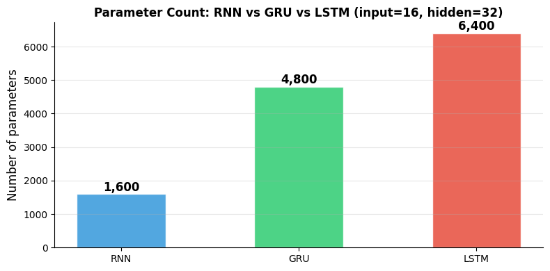
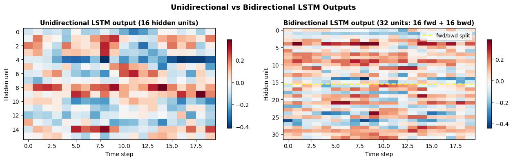

How do you build an RNN/LSTM in PyTorch?#
Topics: nn.RNN · nn.LSTM · nn.GRU · Hidden State · Sequence Batching · Bidirectional · Stacked Layers
1. nn.RNN#
What it is#
Processes sequential data one step at a time, maintaining a hidden state
Input shape:
(seq_len, batch, input_size)by defaultReturns:
output (seq_len, batch, hidden)andh_n (num_layers, batch, hidden)
Key parameters#
input_size— size of each input elementhidden_size— size of hidden statenum_layers— number of stacked RNN layersbatch_first=True— changes input shape to(batch, seq_len, input_size)bidirectional=True— processes sequence in both directions
Gotchas#
Default is
batch_first=False— usebatch_first=Trueto match DataLoader conventionHidden state must be initialized and passed between batches for stateful RNNs
For inference, detach hidden state:
h_n.detach()
import torch
import torch.nn as nn
import matplotlib.pyplot as plt
import numpy as np
torch.manual_seed(42)
# Basic RNN
rnn = nn.RNN(input_size=8, hidden_size=16, num_layers=1, batch_first=True)
x = torch.randn(4, 10, 8) # (batch=4, seq_len=10, input_size=8)
h0 = torch.zeros(1, 4, 16) # (num_layers, batch, hidden_size)
out, h_n = rnn(x, h0)
print(f"Input : {x.shape}")
print(f"Output: {out.shape}") # (batch, seq_len, hidden)
print(f"h_n : {h_n.shape}") # (num_layers, batch, hidden)
# Visualize hidden states across time steps
rnn_small = nn.RNN(input_size=4, hidden_size=8, batch_first=True)
seq = torch.randn(1, 12, 4)
h = torch.zeros(1, 1, 8)
hidden_states = []
for t in range(seq.shape[1]):
out_t, h = rnn_small(seq[:, t:t+1, :], h)
hidden_states.append(h.squeeze().detach().numpy())
hidden_matrix = np.array(hidden_states).T # (hidden, seq_len)
fig, axes = plt.subplots(1, 2, figsize=(13, 4))
im = axes[0].imshow(hidden_matrix, cmap='RdBu_r', aspect='auto')
axes[0].set_xlabel('Time step', fontsize=11)
axes[0].set_ylabel('Hidden unit', fontsize=11)
axes[0].set_title('Hidden State Values Across Time Steps', fontsize=12, fontweight='bold')
plt.colorbar(im, ax=axes[0], shrink=0.8)
# Hidden state norm across time
norms = [np.linalg.norm(h) for h in hidden_states]
axes[1].plot(norms, color='#3498DB', linewidth=2.5, marker='o', markersize=5)
axes[1].set_xlabel('Time step', fontsize=11)
axes[1].set_ylabel('Hidden state norm', fontsize=11)
axes[1].set_title('Hidden State Norm Over Sequence', fontsize=12, fontweight='bold')
axes[1].grid(True, alpha=0.3)
axes[1].spines['top'].set_visible(False)
axes[1].spines['right'].set_visible(False)
plt.suptitle('RNN Hidden State Dynamics', fontsize=13, fontweight='bold')
plt.tight_layout()
plt.savefig('rnn_hidden_states.png', dpi=120, bbox_inches='tight')
plt.show()
Input : torch.Size([4, 10, 8])
Output: torch.Size([4, 10, 16])
h_n : torch.Size([1, 4, 16])

2. nn.LSTM#
What it is#
Long Short-Term Memory — RNN variant with gating mechanism
Maintains two states:
h_n(hidden state) andc_n(cell state)Cell state acts as long-term memory, hidden state as short-term
Key intuition#
Forget gate: what to erase from cell state
Input gate: what new information to store
Output gate: what to expose as hidden state
Gradient highway through cell state solves vanishing gradient
When to use over RNN#
Long sequences (50+ steps)
When long-range dependencies matter
Time series forecasting, NLP sequence labeling
Gotchas#
LSTM returns
(output, (h_n, c_n))— unpack the tuple correctlyInitialize both h_0 and c_0 to zeros
4× more parameters than RNN — slower but better for long sequences
import torch
import torch.nn as nn
import matplotlib.pyplot as plt
import numpy as np
torch.manual_seed(42)
# LSTM
lstm = nn.LSTM(input_size=8, hidden_size=32, num_layers=2,
batch_first=True, dropout=0.2)
x = torch.randn(4, 20, 8) # (batch, seq_len, input)
h0 = torch.zeros(2, 4, 32) # (num_layers, batch, hidden)
c0 = torch.zeros(2, 4, 32)
output, (h_n, c_n) = lstm(x, (h0, c0))
print(f"Input : {x.shape}")
print(f"Output : {output.shape}") # (batch, seq_len, hidden)
print(f"h_n : {h_n.shape}") # (num_layers, batch, hidden)
print(f"c_n : {c_n.shape}") # (num_layers, batch, hidden)
# Compare gradient flow: RNN vs LSTM
def gradient_norm_through_time(model_type, seq_len=30):
if model_type == 'RNN':
model = nn.RNN(4, 16, batch_first=True)
else:
model = nn.LSTM(4, 16, batch_first=True)
x = torch.randn(1, seq_len, 4, requires_grad=True)
if model_type == 'RNN':
out, _ = model(x)
else:
out, _ = model(x)
loss = out[:, -1, :].sum()
loss.backward()
return x.grad[0, :, 0].abs().detach().numpy()
grad_rnn = gradient_norm_through_time('RNN')
grad_lstm = gradient_norm_through_time('LSTM')
fig, ax = plt.subplots(figsize=(10, 4))
ax.plot(range(30), grad_rnn, color='#E74C3C', linewidth=2.5, label='RNN gradient')
ax.plot(range(30), grad_lstm, color='#2ECC71', linewidth=2.5, label='LSTM gradient')
ax.set_xlabel('Time step (0 = earliest, 29 = latest)', fontsize=11)
ax.set_ylabel('Input gradient magnitude', fontsize=11)
ax.set_title('Gradient Flow: RNN vs LSTM (earlier steps receive larger gradient = better)', fontsize=11, fontweight='bold')
ax.legend(fontsize=11)
ax.grid(True, alpha=0.3)
ax.spines['top'].set_visible(False)
ax.spines['right'].set_visible(False)
plt.tight_layout()
plt.savefig('rnn_vs_lstm_gradients.png', dpi=120, bbox_inches='tight')
plt.show()
Input : torch.Size([4, 20, 8])
Output : torch.Size([4, 20, 32])
h_n : torch.Size([2, 4, 32])
c_n : torch.Size([2, 4, 32])

3. nn.GRU#
What it is#
Gated Recurrent Unit — simplified LSTM with 2 gates instead of 4
Single hidden state (no separate cell state)
Similar performance to LSTM, fewer parameters
When to use GRU vs LSTM#
GRU → faster training, fewer parameters, works well on smaller datasets
LSTM → more expressive, better for very long sequences
In practice: try GRU first
Gotchas#
GRU returns
(output, h_n)— no cell state to unpack (unlike LSTM)Same interface as RNN otherwise — easy to swap
import torch
import torch.nn as nn
import matplotlib.pyplot as plt
torch.manual_seed(42)
gru = nn.GRU(input_size=8, hidden_size=32, num_layers=2, batch_first=True)
x = torch.randn(4, 20, 8)
h0 = torch.zeros(2, 4, 32)
output, h_n = gru(x, h0)
print(f"GRU output: {output.shape}")
print(f"GRU h_n : {h_n.shape}")
# Parameter comparison: RNN vs LSTM vs GRU
def count_params(model):
return sum(p.numel() for p in model.parameters())
input_size, hidden_size = 16, 32
rnn_params = count_params(nn.RNN(input_size, hidden_size))
gru_params = count_params(nn.GRU(input_size, hidden_size))
lstm_params = count_params(nn.LSTM(input_size, hidden_size))
fig, ax = plt.subplots(figsize=(8, 4))
models = ['RNN', 'GRU', 'LSTM']
params = [rnn_params, gru_params, lstm_params]
colors = ['#3498DB', '#2ECC71', '#E74C3C']
bars = ax.bar(models, params, color=colors, alpha=0.85, edgecolor='white', width=0.5)
ax.set_ylabel('Number of parameters', fontsize=12)
ax.set_title(f'Parameter Count: RNN vs GRU vs LSTM (input={input_size}, hidden={hidden_size})', fontsize=12, fontweight='bold')
ax.grid(True, alpha=0.3, axis='y')
ax.spines['top'].set_visible(False)
ax.spines['right'].set_visible(False)
for bar, val in zip(bars, params):
ax.text(bar.get_x() + bar.get_width()/2, bar.get_height() + 10,
f'{val:,}', ha='center', va='bottom', fontsize=12, fontweight='bold')
plt.tight_layout()
plt.savefig('rnn_param_comparison.png', dpi=120, bbox_inches='tight')
plt.show()
GRU output: torch.Size([4, 20, 32])
GRU h_n : torch.Size([2, 4, 32])

4. Bidirectional & Stacked Layers#
Bidirectional#
Processes sequence forward AND backward
Output size doubles:
hidden_size * 2Useful when future context matters (NLP classification, not generation)
Stacked layers#
Multiple RNN layers stacked — output of layer N is input to layer N+1
num_layers=2adds depth, increases capacityAdd
dropoutbetween layers to regularize
Interview Q&A#
When would you NOT use bidirectional?
Text generation / language modeling — future tokens not available
Real-time time series — future data not available
Use only when full sequence is available at inference time
What does the output of a bidirectional LSTM look like?
output[:, :, :hidden]— forward directionoutput[:, :, hidden:]— backward directionConcatenated along last dimension →
(batch, seq, hidden*2)
Gotchas#
h_n shape for bidirectional:
(num_layers * 2, batch, hidden)— factor of 2Linear layer after biLSTM needs
hidden_size * 2as input size
import torch
import torch.nn as nn
import matplotlib.pyplot as plt
torch.manual_seed(42)
# Bidirectional LSTM
bilstm = nn.LSTM(input_size=8, hidden_size=16, num_layers=2,
batch_first=True, bidirectional=True, dropout=0.2)
x = torch.randn(4, 15, 8)
out, (h_n, c_n) = bilstm(x)
print(f"BiLSTM output: {out.shape}") # (batch, seq, hidden*2=32)
print(f"BiLSTM h_n : {h_n.shape}") # (num_layers*2, batch, hidden)
# Classifier using BiLSTM
class BiLSTMClassifier(nn.Module):
def __init__(self, input_size, hidden_size, num_classes, num_layers=2):
super().__init__()
self.lstm = nn.LSTM(input_size, hidden_size, num_layers=num_layers,
batch_first=True, bidirectional=True, dropout=0.2)
self.classifier = nn.Linear(hidden_size * 2, num_classes)
def forward(self, x):
out, (h_n, _) = self.lstm(x)
last = out[:, -1, :] # last time step
return self.classifier(last)
model = BiLSTMClassifier(input_size=8, hidden_size=16, num_classes=3)
x = torch.randn(4, 15, 8)
print(f"Classifier output: {model(x).shape}")
# Compare: unidirectional vs bidirectional output patterns
uni = nn.LSTM(8, 16, batch_first=True)
bi = nn.LSTM(8, 16, batch_first=True, bidirectional=True)
seq = torch.randn(1, 20, 8)
with torch.no_grad():
out_uni, _ = uni(seq)
out_bi, _ = bi(seq)
fig, axes = plt.subplots(1, 2, figsize=(13, 4))
im1 = axes[0].imshow(out_uni[0].T.numpy(), cmap='RdBu_r', aspect='auto')
axes[0].set_title('Unidirectional LSTM output (16 hidden units)', fontsize=11, fontweight='bold')
axes[0].set_xlabel('Time step'); axes[0].set_ylabel('Hidden unit')
plt.colorbar(im1, ax=axes[0], shrink=0.8)
im2 = axes[1].imshow(out_bi[0].T.numpy(), cmap='RdBu_r', aspect='auto')
axes[1].set_title('Bidirectional LSTM output (32 units: 16 fwd + 16 bwd)', fontsize=11, fontweight='bold')
axes[1].set_xlabel('Time step'); axes[1].set_ylabel('Hidden unit')
axes[1].axhline(15.5, color='yellow', linewidth=2, linestyle='--', label='fwd/bwd split')
axes[1].legend(fontsize=9)
plt.colorbar(im2, ax=axes[1], shrink=0.8)
plt.suptitle('Unidirectional vs Bidirectional LSTM Outputs', fontsize=13, fontweight='bold')
plt.tight_layout()
plt.savefig('bilstm_output.png', dpi=120, bbox_inches='tight')
plt.show()
BiLSTM output: torch.Size([4, 15, 32])
BiLSTM h_n : torch.Size([4, 4, 16])
Classifier output: torch.Size([4, 3])
